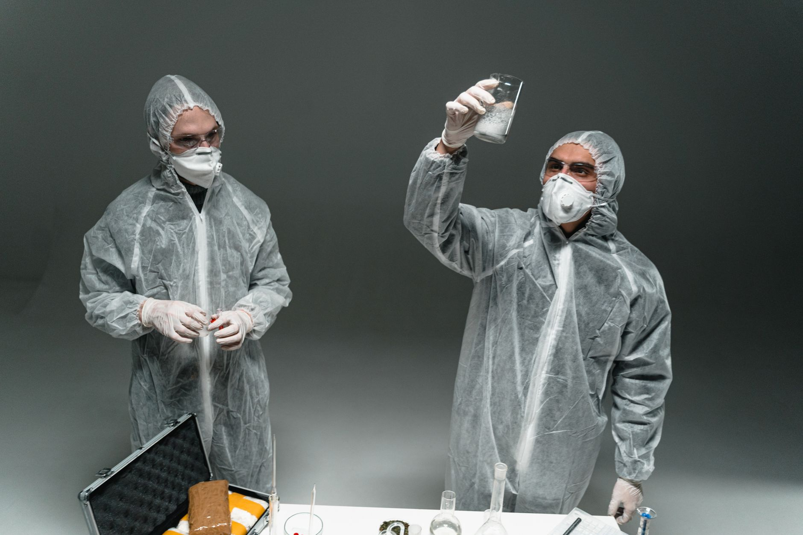

The magnet test for silver is a fast, free check you can do at home. It works, but only partially, and that gap matters more than most buyers realize. A neodymium magnet will catch some fakes immediately. It will miss others completely. Understanding which fakes it catches, and which it does not, is what determines whether this test actually protects you.

Here is the direct answer: pure silver is diamagnetic. It does not attract to magnets. If a bar or coin pulls strongly toward your magnet, you are holding something other than silver. More usefully, if you tilt a neodymium magnet at a 45-degree angle on a silver surface and let it go, the magnet will slide slowly down, braking against the metal. This is the eddy current effect. Conductive metals like silver generate opposing magnetic fields that resist the magnet's movement. Steel, iron, and most base metals do not produce this effect. A slow, smooth slide is a good sign.
The problem is copper. Copper is also non-magnetic and also conductive. A copper-plated or solid copper fake can produce a similar slide and pass the basic magnet test. This matters because the most common counterfeit silver circulating right now is copper-based. 100% of below-market-priced silver Eagles purchased from eBay and tested via XRF in a 2024 investigation were fake, and all were primarily copper with less than 1% actual silver (Source: NBC Connecticut).

A magnet alone would not have caught those fakes.
What the Magnet Test Actually Detects
The magnet test has two forms. The first is the attraction test: bring a magnet near the piece and see if it sticks. Any piece that attracts strongly to a magnet is definitely not silver. Silver has no ferromagnetic properties. Steel-core fakes, coins or bars with a steel center plated in silver, fail this test on contact.
The second form is the slide test. Place a strong neodymium magnet on a tilted silver surface and let it slide. Pure silver creates eddy currents that slow the magnet's descent noticeably. This works because silver has exceptionally high electrical conductivity. As the magnet moves, it generates a current in the metal, and that current creates a counterforce that brakes the slide.
What the test does not detect is any fake made from a non-magnetic, conductive metal. Copper, brass, and aluminum all produce eddy currents. A copper round plated with silver will slow the magnet. A copper bar stamped with the right hallmarks will feel identical to real silver under this test. The magnet test does not read composition. It reads magnetism and conductivity, and copper satisfies both conditions.
Why the Counterfeit Problem Makes This Gap Dangerous
Counterfeits are not rare edge cases. More than 80% of coin dealer survey participants noted an increase in counterfeit coins and bars entering the marketplace over the preceding five years (Source: National Coin & Bullion Association / ACTF). Dealers are seeing this grow, and retail buyers are far less equipped than dealers to catch it.
The most commonly faked products are recognizable names. 43.3% of U.S. Coin dealers report encountering customers trying to sell them counterfeit silver American Eagle bullion coins (Source: CoinWeek / Anti-Counterfeiting Task Force Dealer Survey). American Eagles are the most recognized silver coin in the country, which makes them a high-value counterfeiting target. Bars are targeted too: 24.7% of coin dealers report encountering fake SilverTowne Mint silver bars from customers (Source: CoinWeek / Anti-Counterfeiting Task Force Dealer Survey).
None of those customers thought they were buying fakes. Many probably ran the magnet test and saw nothing wrong, because the fakes were copper-based, not steel-based.
The online channel is the highest-risk environment for buyers. The Anti-Counterfeiting Educational Foundation was tracking more than 300 websites actively selling counterfeit coins as of February 2023, many operated by the same individuals under different names (Source: CoinNews / Anti-Counterfeiting Educational Foundation). These sites use real product photography, copy legitimate descriptions, and price just below market to create urgency. They are built to look credible.
What Passes the Magnet Test But Is Still Fake
Here is the scenario that the magnet test cannot protect you from.
A fake silver American Eagle is struck in copper and plated with a thin silver layer. The coin is close to the right weight because copper density is near silver density, close enough to fool an inexpensive postal scale. The design is copied from original dies. You bring a neodymium magnet near it and the coin does not attract. You tilt the magnet on the coin's surface and it slides slowly. You walk away thinking you are safe.
You are not safe. That coin has under 1% silver content. The 2024 XRF investigation found exactly this when testing discounted Eagles purchased from online marketplaces.
The magnet test passed. The coin was a fake.
Tests That Catch What the Magnet Misses
For reliable verification, you need tests that measure actual composition, not just magnetic behavior.
The ice test is a useful at-home addition. Silver has the highest thermal conductivity of any metal. Place an ice cube on a silver bar and it melts noticeably faster than on a copper or steel surface. This is not definitive on its own, but it adds a data point the magnet test cannot provide.
The ping test works well for coins. Drop a real silver coin onto a hard surface and it rings with a clear, sustained tone lasting roughly one to two seconds. Copper and base metal coins produce a duller, shorter thud. You can compare your coin's ring against documented audio from authenticated pieces online.
A Fisch coin tester uses three simultaneous measurements: diameter, thickness, and weight. It catches coins that are the right diameter but wrong thickness, or right weight but wrong diameter. Many common fakes fail at least one dimension and will not pass through the tester's slot correctly.
The most reliable non-destructive test is XRF analysis. Dealers and refiners use XRF guns to read the actual elemental composition of a piece in seconds. If you are purchasing a large quantity or have any doubt about a specific item, asking for an XRF test is the right step. We use this equipment in our verification process and can test pieces on request.
For bars specifically, ultrasonic thickness testing sends sound waves through the metal and measures how they travel. A tungsten or base-metal core, which some sophisticated fakes use, returns different readings than solid silver all the way through.
How to Buy Silver Without Relying on At-Home Tests
The most effective counterfeit protection is not a test. It is a buying practice that makes fakes structurally unlikely.
Buy from established dealers with traceable sourcing. We stock American Silver Eagles, 10 oz bars, and 1 oz rounds purchased directly from the US Mint, authorized distributors, and established refiners. When silver moves through that supply chain, the counterfeiting risk is close to zero. Fakes concentrate in peer-to-peer and discount-online channels, not in documented wholesale chains.
Avoid below-market prices without exception. Silver has a spot price that updates in real time throughout every trading day. Any offer priced significantly below spot, especially from an unknown online seller, is a red flag with no legitimate explanation. The NBC Connecticut investigation confirmed this clearly: every discounted Eagle purchased from the platform was fake. Sellers who cannot cover spot are not selling silver.
Ask for documentation. We provide receipts tracing products to their original distributor or mint. For bars, refinery assay cards confirm weight and purity. Older secondary-market coins may not always have paperwork, but new retail purchases from reputable dealers should.
When you do run the magnet test, use a neodymium magnet, not a refrigerator magnet. Standard magnets are too weak to demonstrate the eddy current effect properly. Perform both the attraction test and the slide test. If the piece attracts to the magnet or slides without resistance, stop there and do not complete the purchase. If it passes both, treat that result as one useful data point alongside weight, dimensions, and source verification.
Build Your Silver Reserve With Verified Inventory
The magnet test is worth doing every time. It costs nothing, takes ten seconds, and catches steel-core fakes on contact. But it does not replace a full verification process, and it does not protect you from the copper-based fakes that dominate the counterfeit market right now.
We stock verified silver backed by documented sourcing, and our team can answer specific questions about any product before you buy. If you want to start or grow a physical silver reserve without second-guessing authenticity on every piece, browse our current inventory to see what is available. Every item has passed through a verified supply chain, and you can reach us directly if you want to know more about how a specific product was sourced before you commit.
Related
- Silver Counterfeit Detection Guide
- How To Spot Fake Silver Coins And Bars
- Silver In Ancient Civilizations As Currency
Read next: Silver Counterfeit Detection Guide